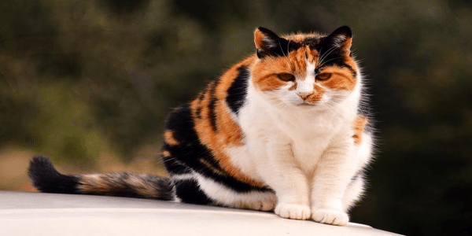
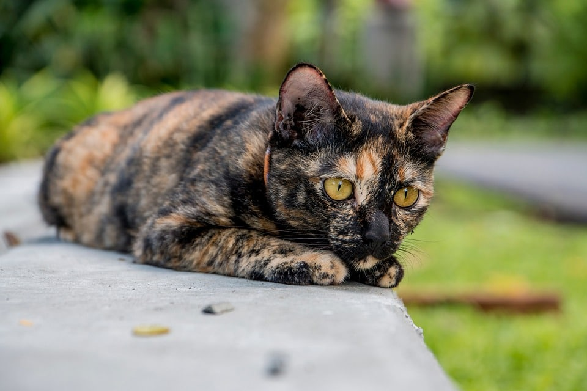

-
Les Chats Calico
04/10/2023
Un chat calico ou chat tricolore est un chat domestique dont le pelage est généralement de 25 % à 75 % blanc avec de grandes taches orange et noires (parfois crème et grises).
Bien que cette particularité apparaissent chez toutes les races, ce sont les chats symboles de l'État du Maryland.
Le pelage calico ne doit pas être confondu avec une écaille de tortue, qui présente une couche principalement tachetée de noir/ orange ou de gris/ crème avec relativement peu ou pas de marques blanches.
Les chats écaille de tortue
04/10/2023
Les robes écaille de tortue (ou tortoiseshell) sont définies par la présence à la fois de roux et de noir dans le pelage des chats.
Lorsque du blanc est également présent, la robe prend le nom de tricolore (ou isabelle, calico ou chatte d'Espagne / tortoiseshell-and-white).
Pour des raisons génétiques, elles sont portées presque exclusivement par les femelles.
Romain Maza
Les chats Tigrées

04/10/2023
Tabby désigne le patron d'une robe de chat. Les chats tabbies sont plus communément appelés chats tigrés, en rapport à l'animal du même nom.
Ce patron est le plus proche de celui des chats sauvages et permet un camouflage idéal1, c'est aussi le patron qu'on retrouve le plus fréquemment parmi les chats de gouttière et il est aussi présent chez de nombreuses races de chats.